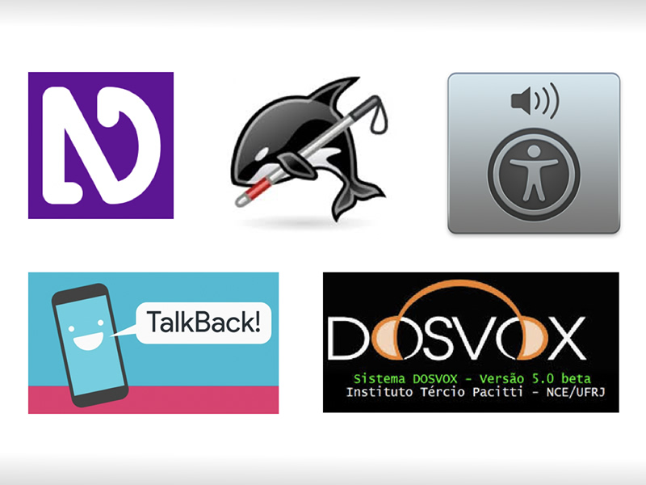

O que são Softwares de tela (leitores de tela)
Leitores de tela são softwares usados para obter resposta do computador por meio sonoro, usado principalmente por deficientes visuais. O programa vai percorrendo textos e imagens e lendo em voz alta tudo o que ele encontra na tela, assim como as operações que o usuário realiza com as teclas alfanuméricas e os comandos digitados.
Quais são os principais softwares de tela?

Jaws
Leitor de tela pago para Windows
Virtual Vision
Leitor de tela pago para Windows
NVDA
Leitor de tela gratuito para Windows
Window-Eyes
Software pago para Windows
Orca
Leitor de tela gratuito para Linux
VoiceOver
Leitor de tela para IOS que acompanha os dispositivos da Apple